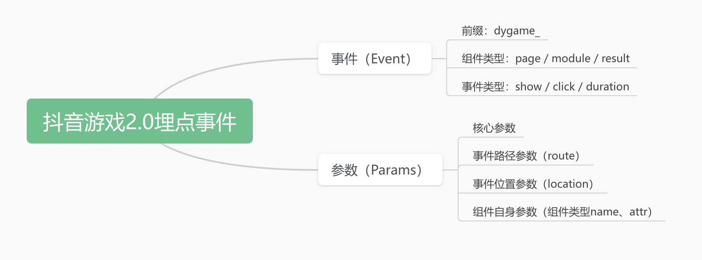
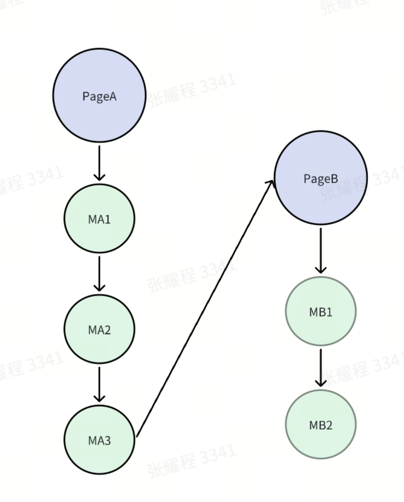
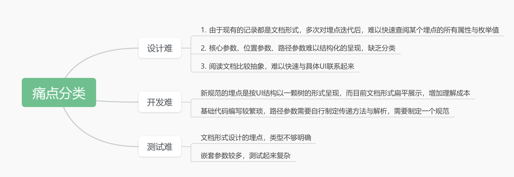
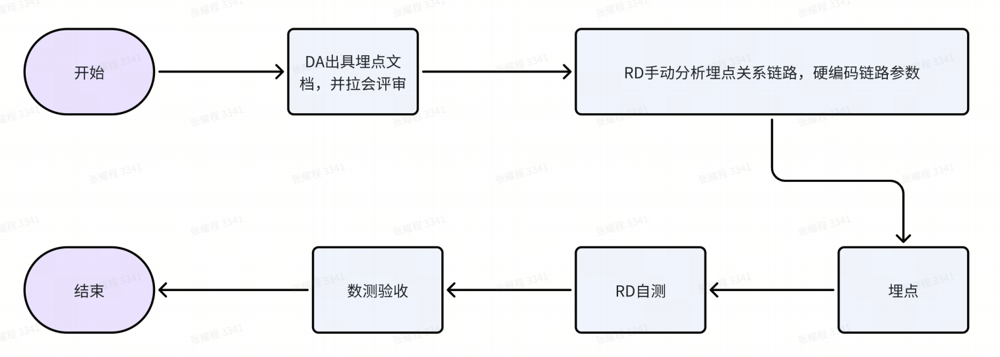
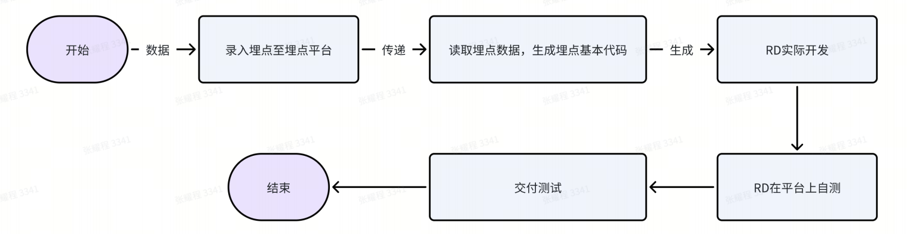
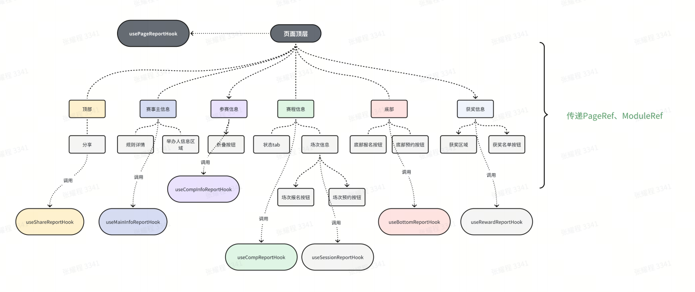
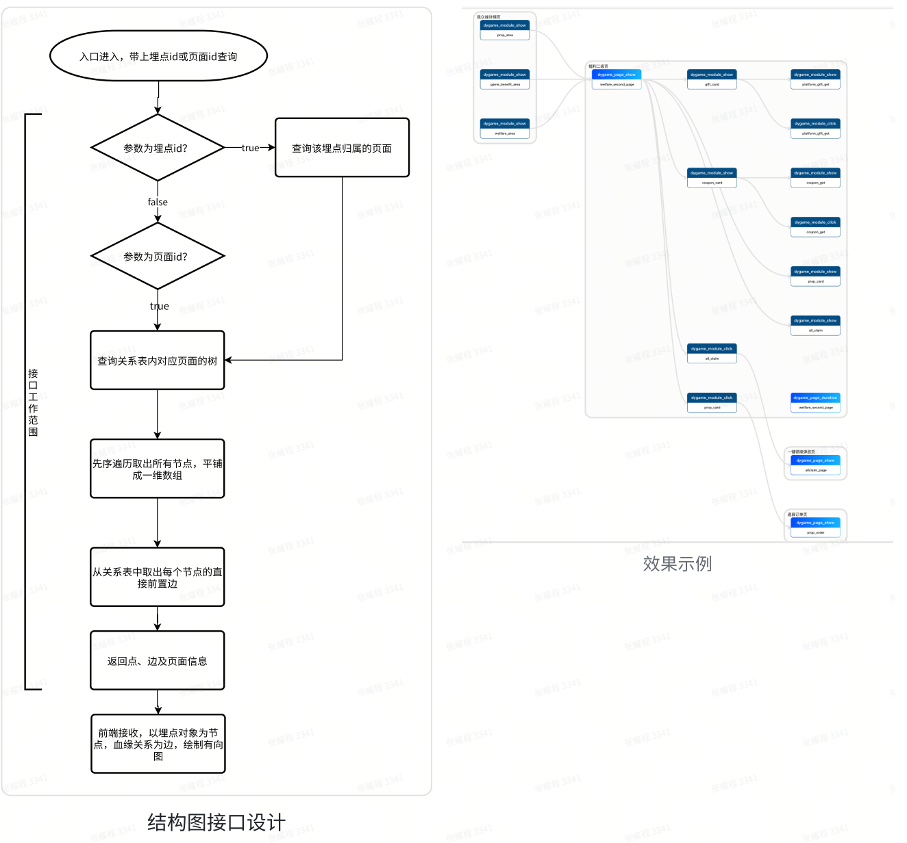

时间：2024.6.13
# 背景
大概在 2022 年底时，数分（下文称 DA）侧基于旧的埋点现状，更新提出了一个新的埋点规范（V2）。
# 旧规范
DA 在旧规范中，针对每个需要埋点的 UI 组件，使用一个唯一的事件名称来进行标识，然后在同层塞入需要关注的参数，比较简陋，举个例子：
sendLog({ | |
eventName: 'livesdk_xxx_xxx', | |
attr: { | |
... | |
} | |
}) |
# 新规范
新规范的事件名统⼀使⽤的命名规范：抖⾳游戏埋点前缀_组件类型_组件⾏为
DA 将埋点参数分成三部分结构，并利用其中的路由结构来区分标注的 UI 组件。

举个例子，假设页面业务路径如下：

此时 PageA 下的 Module：MB2 的参数长这样：
const params = { | |
// 省略其他核心参数 | |
module_name: "MB2", | |
attr: { /* ...obj */ }, // 模块属性 | |
location: { | |
current_page: 'PageB', | |
current_page_attr: { /* PageB 的 attr */ }, | |
current_module: ["MB1"], // 模块的前置模块， | |
current_module_attr: [{ /* MB1 的 attr */ }], // | |
}, | |
route: { | |
previous_page: 'PageA', | |
previous_page_attr: { /* PageA 的 attr */ }, | |
previous_module: ["MA1", "MA2", "MA3"], // 前置页面跳转到 PageB 的模块链 | |
previous_module_attr: [ | |
{ /* MA1 的 attr */ }, | |
{ /* MA2 的 attr */ }, | |
{ /* MA3 的 attr */ }, | |
] | |
} | |
} |
新规范的复杂度远比旧规范要高，提出后研发流程里的各个角色遇到了许多痛点。
# 痛点

# 思路 / 方案
针对开发难的痛点，我们组内的其他同事设计了一套传递埋点参数的规范以及解析的 npm 包去进行减少基础的解析代码与依赖设置工作，但由于不是我做的，此处按下不表。
针对设计、测试难的痛点，我们提供一个符合规范的埋点系统去定制能力解决：
- 将埋点按照需求、页面等集合展示，可以快速阅读某个需求 / 页面下的埋点集合。
- 按照设计好的路径结果，按照页面维度进行树状图展示。
- 自动生成对应的埋点文档，供评审使用。
- ...
而当时我的主要工作为：
- 梳理埋点从设计到测试的工作流程，并设计平台的功能点
- 编写平台的基础前后端功能
- 埋点结构树的生成与展示
- 编写工具将存量的埋点文档转化成系统所需的数据格式。
- 沉淀一套结合工具
npm包埋点代码开发的最佳实践
# 工作流

有了平台与基础包之后，期望的流程会变成：

# 沉淀埋点代码开发最佳实践
基础包会帮我们自动将页面的核心参数从 url 参数上读取设置，但路径参数与位置参数仍需要我们手动分析结合编写。
但大量的埋点相关代码侵入到业务代码中，使得业务代码冗长并难以阅读，思考过后决定将埋点代码以 hook 形式抽离，只暴露最终的方法调用。
就以我负责的⼀个⻚⾯赛事活动⻚为例，由于埋点、实际代码编写均是按模块进⾏分割的，我们需要先将埋点按照功能 / 组件进⾏分区。
然后根据埋点所属的模块，编写所有上报 ReportHook ，并且将参数处理的逻辑收敛到 hook 本⾝，
这样做使得埋点代码对普通业务代码侵⼊性最⼩：业务代码只需在模块内部引⼊ hook 并传⼊视图的 Ref，即可正常上报。
同时，由于上报需要得知路径关系，在⻚⾯级 hook 顶层会维护⼀个模块树的 State，这个 State 会随
着组件树层层下发⾄具体模块的 ReportHook 来获取对应链路信息和设置前置模块（并直接继承前置模块信息）、上报埋点，再到⼦组件中消费，如此往复。

总的来说，这个⽅案在编写时会有⼀定复杂度，但编写成功之后，有以下优点:
- 对功能代码的的低侵⼊性，低耦合⾼内聚。埋点逻辑只需另外写在统⼀的 hook ⽂件，业务代码只需调⽤传参。
- 后续容易维护。即使后续布局变更，模块的功能代码本⾝不需要动，只需要调整 hook 内部消费的前置模块
# 埋点结构树
预期：将某个页面内的所有埋点以及其相邻页面的直接埋点生成一棵树供直观阅读。
思考过后，我考虑建⽴⼀个关系表，以⻚⾯ ID 为主键，存储⻚⾯内节点关系的树，以及路径的 Map。在每一次编辑关系时，维护该关系表。
